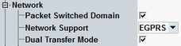

General Network Parameters
This section describes the highest level of the network section.

Miscellaneous network parameters
Selects whether the emulated cell supports packet switched connections. Circuit switched connections are always supported.
Remote command:Selects the support of GPRS or EGPRS in packet domain.
Remote command:Enables or disables dual transfer mode (CS + PS connections in parallel).
To configure slot in dual transfer mode automatically, enable "DTM Slot Config", see "Auto Slot Config / DTM Slot Config"
Remote command: